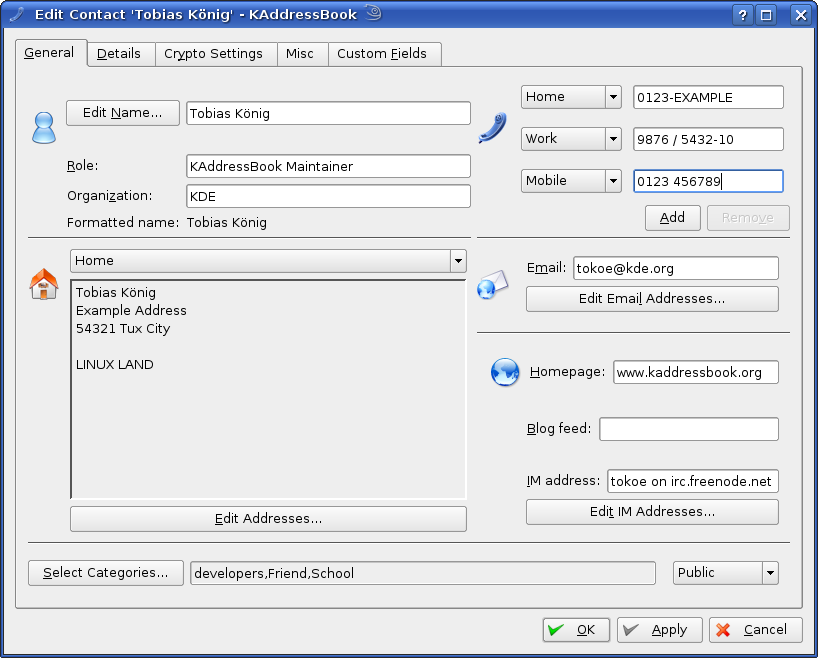

To create or edit contacts, KAddressBook offers a dialog where you can input all the data that can be stored in a vCard.

The Contact Dialog.
In the General tab you can enter the basic information about a contact, for example, addresses, phone numbers, and email addresses.
KAddressBook tries to provide an easy name input by automatic name parsing; for this to work properly it is sometimes necessary to add custom name prefixes, suffixes or inclusions in the configure dialog. However, no algorithm is perfect, and rarely, a name may be parsed incorrectly; in this case, you can disable the automatic name parsing in the name edit dialog, which is available by clicking the button in the contact dialog. If you wish to disable the name parsing for all new contacts you can disable automatic name parsing globally in the configure dialog.
The formatted name of a contact is used by other programs to represent it. KAddressBook offers three predefined types of formatted names:
- Custom
<see below>
- Simple Name
<given name> <family name>
- Full Name
<prefix> <given name> <additional name> <family name> <suffix>
- Reverse Name with Comma
<family name>, <given name>
- Reverse Name
<family name> <given name>
- Organisation
<Organisation Name>
If none of the above types fit your needs you can select the Custom name type, where you can add your own formatted name — this configuration can be done in the name edit dialog. To specify a default formatted name type for new contacts, use the configure dialog.
Here you can enter your contact's phone numbers. As well as land-lines and mobile/cell number, Fax, ISDN and many other types are possible. The number can contain almost any character, so it is possible to format the number in any way you need, including adding letters.
If three numbers aren't enough, simply press the button to get additional fields to enter a number.
If the type of the number is either a Phone, Mobile phone or Fax number you can select a script to be executed when clicking on it. (under Configuration → General)
Here you can enter your contact's addresses. You can do so by pressing the Button and simply enter the Street, Post Office Box, Locality, Postal Code, and Country. After you do so you can look up the address on the map by simply clicking on the address (you can change the map-service/string used by KAddressBook in its settings).
You can also create a label, which will be shown instead of the real address (however, the map lookup, will use the real address).
You can also have set different addresses (i.e. one for work and one for home). It's also possible to set two different Home addresses.
You can enter email addresses for your contact here. You can set one address as standard.
If you set a photo for your contact on the Misc tab, KMail will show it when viewing these addresses.
These addresses will be used in KMail if you type the name of the person in either the To, CC or BCC field of a new message.
The IM Address text box holds the preferred Instant Messaging Address for this contact. To add, view and edit additional IM Addresses, click the button. The Edit Instant Messaging Address dialog appears.

The Edit IM Addresses Dialog.
A contact can have multiple instant messaging addresses associated with it. Other applications, which are using the Kimproxy system, such as Kopete or Konversation can interact using this information. So in example you can associate a contact in IRC with a contact in your address book. This cannot be done automatically, you have to make this association manually in the specific program.
If you are not interest in whether they are picked up in another application, and just want to store the instant messaging addresses with the contact, then it's fine to add and edit them here. Otherwise it's recommended that you let the applications do the changes and not yourself, to not interfere with them.
For more information on adding new Instant Messaging Addresses, see Kopete's handbook and Konversation's handbook.
Categories help you to sort and group your contacts. You can simply add a contact to one or more groups by pressing the button.
To add your own category or remove an unused category you can click on . Here you can edit, add and remove categories. Please notice that it is automatically started in Edit mode.
This is the place where you can store additional details on your contacts.
The fields are mostly self-explanatory. You will notice that the Anniversary and Birthday dates are listed in the Special Dates list in the Kontact summary.
In this tab, you can define preferences with regards to cryptography for a contact. At the time of this writing, only KMail and Kontact will make use of these preferences when composing messages. This mechanism replaces the barely editable per-recipient crypto preferences of earlier KMail releases.
- Allowed Protocols
Here, you can restrict the cryptographic message formats that can be used for this contact. See the section on Cryptographic Message Formats in KMail's handbook for a discussion of the different available formats.
- Preferred OpenPGP encryption key, Preferred S/MIME encryption certificate
Here, you can assign a preferred OpenPGP key and/or S/MIME certificate to be used when encrypting to this contact. Otherwise, the local keyring and local certificate box are searched for matching keys and certificates.
- Message Preference
Here, you can select from a set of directives for user interaction both when signing and when encrypting.
- <none>
No preference, use whatever mode KMail defaults to.
- Never Sign, Never Encrypt
Never sign (encrypt) messages to this contact. Don't ask for confirmation (except in the case of conflicts with preferences of other contacts).
- Always Sign, Always Encrypt
Always sign (encrypt) messages to the contact. Don't ask for confirmation (except in the case of conflicts with preferences of other contacts).
- Always Sign If Possible, Always Encrypt If Possible
Always sign (encrypt) messages to this contact when it would be possible to do so. Don't ask if it isn't possible. Situations in which signing might not be possible include other recipients having signing preferences of "Never". Situations in which encryption might not be possible include missing keys/certificates for this or other receivers.
- Ask
Always ask whether to sign (encrypt).
This describes the Misc settings tab
Here you can enter the contact's geographical location, with Latitude and Longitude. To "enable" them simply click on the check box Use geo data. After that you can either enter the coordinates by hand or click on Edit Geo Data... to select them on a world map.
You can store a spoken version of the name here. It is helpful for foreign names.
However this is part of the vCard 2.1 standard and only supports the three formats: WAVE, PCM, AIFF.
Select if the sound lies on a remote machine.
By clicking on the buddy icon you can select and scale a picture of your contact.
The Photo will be shown in the contact preview and in the Icon view mode. However the Logo picture will only be shown in Icon view and only if there's no photo available.
To reset a photo or logo simply click on it with the mouse button and select Reset.
In the Custom Fields Tab you can add your own fields, either for just the current contact or for all. The following types of fields are possible:
- Text
Here you can enter every alphanumeric symbol
- Numeric Value
You can only enter numbers here.
- Boolean
Boolean is only yes or no (true or false, or however you want to call it). In KAddressBook it's a simply check box you can check or uncheck it.
- Date
Here you can enter a date.
- Time
Here you can enter a time value.
- Date & Time
Here you can enter both, a date and a time.